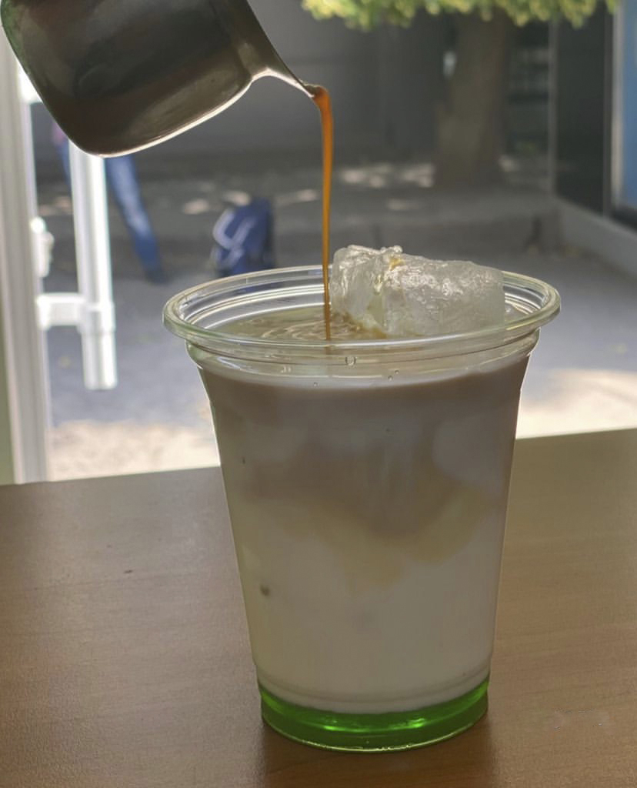
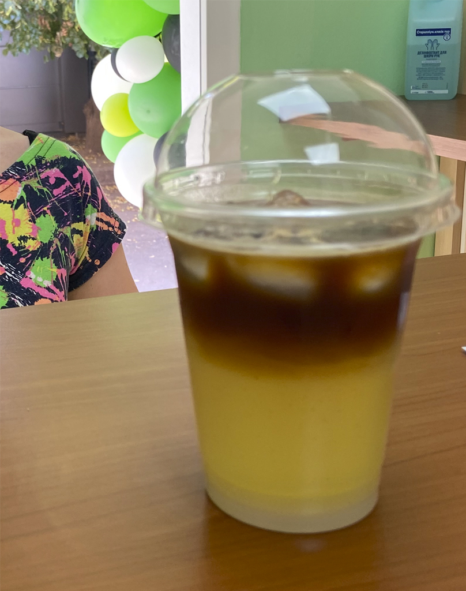
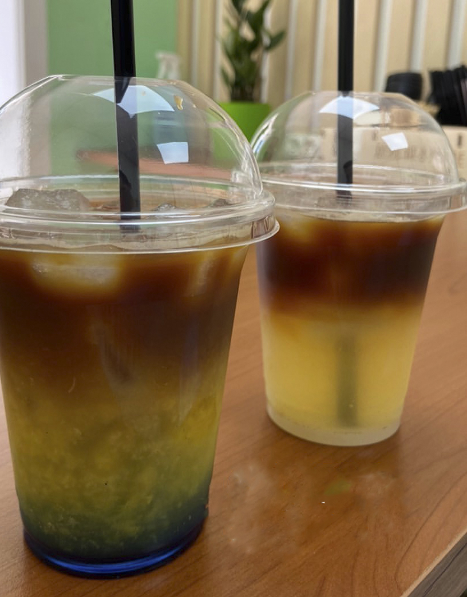
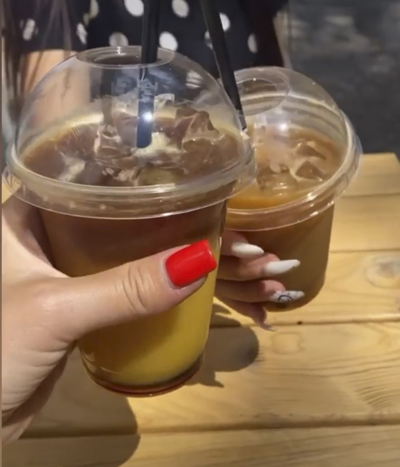
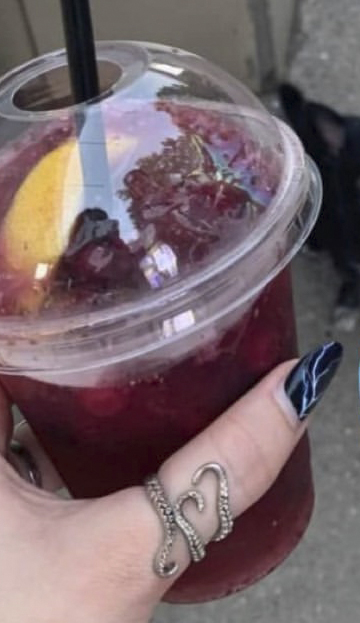
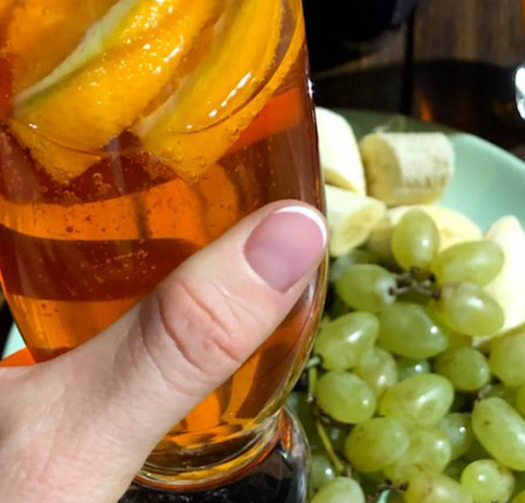

Ice Menu
Холодні напої. В Світі є багато людей, котрі у кав'ярня ходять тільки влітку, бо Айс-меню це окремий вид мистецтва. Холодну каву можна пити з молоком, можно с соками, з морозивом. А що можна казати про багточисельні види лимонадів чи мохіто? Звісно, як і в гарячому меню, так і в холодних напоях - є і класичні напої, а й авторські вироби. Тому ласкаво просимо до світу холодник забаганок.
Айс-лате
Мабуть самий класичний із всіх холодних напоїв є - Айс-Лате. Поєднання молока, кави та смачного сиропа на вибір гостя, що може бути краще?

Стакан 1 шт.(пластик)ЛідСироп(на вибір)МолокоЕспресоКришка (купол)Вихід напою:
300 мл.--- гр.30 мл.140 мл.1 шт.1 шт.300 мл.
400 мл.--- гр.45 мл.195 мл.2 шт.1 шт.400 мл.
Бамбл
Його називають "джміль", "пчола", "оса", "хорнет" та якщо брати назву з походження напою, то це "Бамбл" - що в перекладі і буде звучати як "джміль".
Стакан 1 шт.(пластик)Сироп "Карамель"ЛідАпельсиновий сікЕспресоКришка (купол)Вихід напою:
300 мл.20 мл.--- гр.140 мл.1 шт.1 шт.300 мл.
400 мл.30 мл.--- гр.195 мл.2 шт.1 шт.400 мл.

Тропічний мікс
Мабуть одна із геніальних ідей спробувати еволюціонувати напій "Бамбл", замінивши поєднання сиропу та соку на більш екзотичний, спровокувавши просто неймовірний за смаком напій.
Стакан 1 шт.(пластик)Сироп "Кокос"ЛідАнанасовий сікЕспресоКришка (купол)Вихід напою:
300 мл.20 мл.--- гр.140 мл.1 шт.1 шт.300 мл.
400 мл.30 мл.--- гр.195 мл.2 шт.1 шт.400 мл.
Джус-Кава
"Тропічний мікс" та "Бамбл" дуже солодкі? Захотілось кисленького? Поєднання "Блю Курасао", м'яти, грефпрута, апельсина, кави та лимона...ммм...

Стакан 1 шт.(пластик)Сироп "Blue Curacao"Сироп "М'та"ЛідГрейпфрутовий сікАпельсиновий сікЕспресоЛимонКришка (купол)Вихід напою:
300 мл.10 мл.10 мл.--- гр.70 мл.70 мл.1 шт.10 гр.1 шт.300 мл.
400 мл.15 мл.15 мл.--- гр.90 мл.90 мл.2 шт.10 гр.1 шт.400 мл.

Еспресо-Тонік
Останні роки став мега-популярни напоєм, але є дуже специфічним, тому для гостей важно пояснювати, що він не солодкий та специфічний за рахунок поєднання тоніку та кави.
Стакан 1 шт.(пластик)Сироп "Карамель"ЛідТонікЕспресоКришка (купол)Вихід напою:
300 мл.20 мл.--- гр.140 мл.1 шт.1 шт.300 мл.
400 мл.30 мл.--- гр.195 мл.2 шт.1 шт.400 мл.
Коктейлі
Не можна забувати і про некавові напої, такі як лимонади, мохіто тощо.
Лимонад класичний
Що перше спадає на думку, коли на вулиці жара? ну звісно лимонад!
Стакан 1 шт.(пластик)Цукровий сиропЛимонАпельсинАпельсиновий сікЛідСпрайт/Севен АпКришка (купол)Вихід напою:
300 мл.20 мл.10 гр.10 гр.40 мл.--- гр.120 мл.1 шт.300 мл.
400 мл.30 мл.15 гр.15 гр.50 мл.--- гр.190 мл.1 шт.400 мл.
Лимонад грушевий
Лимонад вигаданий особисто шеф-бариста нашої мережі кав'ярень, бо він дуже полюбляє грушу.
Стакан 1 шт.(пластик)Сироп "Груша"ЯблукоЛимонЯблучний сікЛідСпрайт/Севен АпКришка (купол)Вихід напою:
300 мл.30 мл.10 гр.10 гр.30 мл.--- гр.120 мл.1 шт.300 мл.
400 мл.45 мл.15 гр.15 гр.30 мл.--- гр.190 мл.1 шт.400 мл.
Лимонад ягідний
Що може бути краще влітку ніж ягоди? а що може бути краще ніж лимонад? А якщо я скажу що є ягідний лимонад?

Стакан 1 шт.(пластик)Цукровий сиропЯгоди(суміш)ЛимонЛідСпрайт/Севен АпКришка (купол)Вихід напою:
300 мл.20 мл.30 гр.10 гр.--- гр.120 мл.1 шт.300 мл.
400 мл.30 мл.50 гр.15 гр.--- гр.190 мл.1 шт.400 мл.
Мохіто б/а
Напій із острова Куба, популярність який отримув у 1980-х у Америці. Зараз один із самих популярних напоїв у Світі, до складу якого входить світлий ром, м'та та лайм. Але є багато різновидів. У нашому випадку ми повністю замінемо алкоголь.
Стакан 1 шт.(пластик)Цукровий сиропЛаймМ'ятаЛідСпрайт/Севен АпКришка (купол)Вихід напою:
300 мл.30 мл.20 гр.30 гр.--- гр.120 мл.1 шт.300 мл.
400 мл.40 мл.40 гр.30 гр.--- гр.180 мл.1 шт.400 мл.
Ягідний мохіто б/а
Неперевершене поєднання класичного безалкогольного мохіто та літніх ягід.
Стакан 1 шт.(пластик)Цукровий сиропЯгоди(суміш)ЛаймМ'ятаЛідСпрайт/Севен АпКришка (купол)Вихід напою:
300 мл.10 мл.30 гр.10 гр.20 гр.--- гр.120 мл.1 шт.300 мл.
400 мл.20 мл.40 гр.20 гр.20 гр.--- гр.180 мл.1 шт.400 мл.

Видноградний Spritz
А ось і авторська новинка літа 2022 року. Звісно він повинен бути алкогольним, але ми вигадали смачний рецепт спеціально для кав'ярні.
Стакан 1 шт.(пластик)Мироп "Апельсин"ЯблукоАпельсинЛідВиноградно-яблучний сікСпрайт/Севен АпКришка (купол)Вихід напою:
300 мл.20 мл.10 гр.10 гр.--- гр.70 мл.70 мл.1 шт.300 мл.
400 мл.30 мл.10 гр.10 гр.--- гр.100 мл.100 мл.1 шт.400 мл.